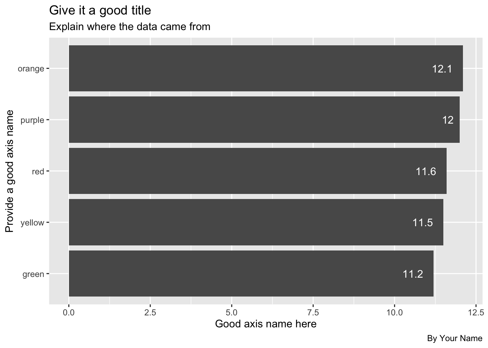

Chapter 9 Tidy data
Data “shape” can be important when you are trying to work with and visualize data. In this chapter we’ll discuss “tidy” data and how this style of organization helps us.
Slides by Hadley Wickham are used with permission from the author.
9.1 Goals for this section
- Explore what it means to have “tidy” data.
- Learn about and use
pivot_longer(),pivot_wider()to make our data tidy. - Use Skittles to explore shaping data.
9.2 The questions we’ll answer
- Are candy colors evenly distributed within a package of Skittles? (The mean of candies by color over all packages)
- Plot a column chart showing the average number of colored candies among all packages using ggplot
- Plot the same data using Datawrapper.
- Bonus 1: Who got the most candies in their bag?
- Bonus 2: What is the average number of candy in a bag?
9.3 What is tidy data
“Tidy” data is well formatted so each variable is in a column, each observation is in a row and each value is a cell. Our first step in working with any data is to make sure we are “tidy.”

Tidy data definition
It’s easiest to see the difference through examples. The data frame below is of tuberculosis reports from the World Health Organization.
- Each row is a set of observations (or case) from a single country for a single year.
- Each column describes a unique variable. The year, the number of cases and the population of the country at that time.

A tidy table
Table2 below isn’t tidy. The count column contains two different type of values.

An untidy table
When our data is tidy, it is easy to manipulate. We can use functions like mutate() to calculate new values for each case.

Manipulate a tidy table
9.4 Tidyr package
When our data is tidy, we can use the tidyr package to reshape the layout of our data to suit our needs. It gets loaded with library(tidyverse).
In the figure below, the table on the left is “wide.” There are are multiple year columns describing the same variable. It might be useful if we want to calculate the difference of the values for two different years. It’s less useful if we want plot on a graphic because we don’t have columns to map as X and Y values.
The table on the right is “long,” in that each column describes a single variable. It is this shape we need when we want to plot values on a chart. We can then set our “Year” column as an X axis, our “n” column on our Y axis, and group by the “Country.”

Wide vs long
9.5 The tidyr verbs
The two functions we’ll use most to reshape are data are:
- pivot_longer() “lengthens” data, increasing the number of rows and decreasing the number of columns.
- pivot_wider() “widens” data, increasing the number of columns and decreasing the number of rows.
Again, the best way to learn this is to present the problem and solve it with explanation.
9.6 Prepare our Skittles project
Start a new project to explore this subject.
- Create a new project and call it:
yourname-skittles - No need to create folders. We’ll just load data directly into the notebook.
- Start a new RNotebook and edit the headline
- Create your setup block and load the libraries below.
library(tidyverse)
library(janitor)
library(lubridate)9.6.1 Get the data
We’ll just load this data directly from Google Sheets into this notebook.
- Add a section that you are importing data.
- Add this import chunk.
data <- read_csv("https://docs.google.com/spreadsheets/d/e/2PACX-1vTxm9NxK67thlGjYOQBo_0JRvx2d137xt0nZGffqR6P1vl8QrlTUduiOsDJ2FKF6yLgQAQphVZve76z/pub?output=csv") %>% clean_names()## Rows: 124 Columns: 7## ── Column specification ────────────────────────────────────────────────────────
## Delimiter: ","
## chr (2): Timestamp, Name
## dbl (5): Red, Green, Orange, Yellow, Purple##
## ℹ Use `spec()` to retrieve the full column specification for this data.
## ℹ Specify the column types or set `show_col_types = FALSE` to quiet this message.# peek at the data
data %>% glimpse()## Rows: 124
## Columns: 7
## $ timestamp <chr> "7/27/2020 18:21:19", "8/1/2020 16:04:56", "7/30/2020 14:56:…
## $ name <chr> "Alora Jones", "Alyssa Hiarker", "Annie Patton", "Christian …
## $ red <dbl> 12, 13, 12, 9, 7, 10, 12, 11, 7, 18, 13, 11, 10, 14, 8, 8, 1…
## $ green <dbl> 11, 15, 12, 10, 12, 14, 15, 5, 10, 9, 11, 13, 7, 12, 15, 10,…
## $ orange <dbl> 12, 10, 8, 17, 13, 9, 12, 17, 10, 13, 11, 7, 12, 10, 20, 13,…
## $ yellow <dbl> 9, 9, 10, 6, 11, 11, 10, 14, 21, 7, 11, 7, 15, 9, 4, 14, 10,…
## $ purple <dbl> 15, 15, 18, 18, 17, 16, 12, 13, 14, 13, 12, 21, 16, 14, 10, …We cleaned the name on import. The timestamp is not a real date, so we need to fix that.
9.6.2 Fix the date
We’re going to convert the timestamp and then turn it into a regular date.
- Create a section and note you are fixing dates.
- Add this chunk and run it. I’ll explain it below.
skittles <- data %>%
mutate(
date_entered = mdy_hms(timestamp) %>% date()
) %>%
select(-timestamp)
skittles %>% glimpse()## Rows: 124
## Columns: 7
## $ name <chr> "Alora Jones", "Alyssa Hiarker", "Annie Patton", "Christi…
## $ red <dbl> 12, 13, 12, 9, 7, 10, 12, 11, 7, 18, 13, 11, 10, 14, 8, 8…
## $ green <dbl> 11, 15, 12, 10, 12, 14, 15, 5, 10, 9, 11, 13, 7, 12, 15, …
## $ orange <dbl> 12, 10, 8, 17, 13, 9, 12, 17, 10, 13, 11, 7, 12, 10, 20, …
## $ yellow <dbl> 9, 9, 10, 6, 11, 11, 10, 14, 21, 7, 11, 7, 15, 9, 4, 14, …
## $ purple <dbl> 15, 15, 18, 18, 17, 16, 12, 13, 14, 13, 12, 21, 16, 14, 1…
## $ date_entered <date> 2020-07-27, 2020-08-01, 2020-07-30, 2020-06-23, 2020-07-…Let’s talk just a minute about what we’ve done here:
- We name our new tibble.
- We are filling that tibble starting with our imported data called
data. - We use mutate to create a new column
date_entered, then fill it by first converting the text to an official timestamp datatype (which requires the lubridate functionmdy_hms()), and then we extract just the date of that withdate(). - We then use
select()to remove the old timestamp column.
9.6.3 Peek at the wide table
Let’s look closer at this:
skittles %>% head()## # A tibble: 6 × 7
## name red green orange yellow purple date_entered
## <chr> <dbl> <dbl> <dbl> <dbl> <dbl> <date>
## 1 Alora Jones 12 11 12 9 15 2020-07-27
## 2 Alyssa Hiarker 13 15 10 9 15 2020-08-01
## 3 Annie Patton 12 12 8 10 18 2020-07-30
## 4 Christian McDonald 9 10 17 6 18 2020-06-23
## 5 Claudia Ng 7 12 13 11 17 2020-07-30
## 6 Cristina Pop 10 14 9 11 16 2020-07-22This is not the worst example of data. It could be useful to create a “total” column, but there are better ways to do this with long data.
9.7 Pivot longer
What we want here is five rows for Alora Jones, with a column for “color” and a column for “candies.”
The pivot_longer() function needs several arguments:
- Which columns do you want to pivot? For us, these are the color columns.
- What do you want to name the new column to describe the column names? For us we want to name this “color” since that’s what those columns described.
- What do you want to name the new column to describe the values that were in the cells? For us we want to call this “candies” since these are the number of candies in each bag.
There are a number of ways we can describe which columns to pivot … anything in tidy-select works. You can see a bunch of examples here.
We are using a range, naming the first “red” and the last column “purple” with : in between. This only works because those columns are all together. We could also use cols = !c(name, date_entered) to say everything but those two columns.
- Add a note that you are pivoting the data
- Add the chunk below and run it
skittles_long <- skittles %>%
pivot_longer(
cols = red:purple, # sets which columns to pivot based on their names
names_to = "color", # sets column name for color
values_to = "candies" # sets column name for candies
)
skittles_long %>% head()## # A tibble: 6 × 4
## name date_entered color candies
## <chr> <date> <chr> <dbl>
## 1 Alora Jones 2020-07-27 red 12
## 2 Alora Jones 2020-07-27 green 11
## 3 Alora Jones 2020-07-27 orange 12
## 4 Alora Jones 2020-07-27 yellow 9
## 5 Alora Jones 2020-07-27 purple 15
## 6 Alyssa Hiarker 2020-08-01 red 139.7.1 Average candies per color
To get the average number of candies per each color, we can use our skittles_long data and group_by color (which will consider all the red rows together, etc.) and use summarize() to get the mean.
This is something you should be able to do on your own, as it is very similar to the sum()s we did with military surplus, but you use mean() instead.
Save the resulting summary table into a new tibble called skittles_avg.
Try it on your own
skittles_avg <- skittles_long %>%
group_by(color) %>%
summarize(avg_candies = mean(candies))
skittles_avg## # A tibble: 5 × 2
## color avg_candies
## <chr> <dbl>
## 1 green 11.2
## 2 orange 12.1
## 3 purple 12.0
## 4 red 11.6
## 5 yellow 11.59.7.2 Round the averages
Let’s modify this summary to round the averages to tenths so they will plot nicely on our chart.’
The round() function needs the column to change, and then the number of digits past the decimal to include.
- Edit your summary to include the mutate below.
skittles_avg <- skittles_long %>%
group_by(color) %>%
summarize(avg_candies = mean(candies)) %>%
mutate(
avg_candies = round(avg_candies, 1)
)
skittles_avg## # A tibble: 5 × 2
## color avg_candies
## <chr> <dbl>
## 1 green 11.2
## 2 orange 12.1
## 3 purple 12
## 4 red 11.6
## 5 yellow 11.5BONUS POINT OPPORTUNITY: Using a similar method to rounding above, you can also capitalize the names of the colors. You don’t have to do this, but I’ll give you bonus points if you do:
- In your mutate, add a rule that updates
colorcolumn usingstr_to_title(color).
You can read more about converting the case of a string here. It’s part of the stringr package, which is loaded with tidyverse.
9.7.3 On your own: Plot the averages
Now I want you to use ggplot to create a bar chart that shows the average number of candies in a bag. This is very similar to your plots of Disney Princesses and ice cream in Chapter 6.
- Build a bar chart of averge color using ggplot.
Some things to consider:
- I want the bars to be ordered by the highest average on top.
- I want a good title, subtitle and byline, along with good axis names.
- Include the values on the bars
- Change the theme to something other than the default
Here is what it should look like, but with good text, etc. The numbers shownn here may vary depending on future updates to the data:

9.8 Using Datawrapper
There are some other great charting tools that journalists use. My favorite is Datawrapper and is free for the level you need it.
Datawrapper is so easy I don’t even have to teach you how to use it. They have excellent tutorials.
What you do need is the data to plot, but you’ve already “shaped” it the way you need it. Your skittles_avg tibble is what you need.
Here are the steps I want you to follow:
9.8.1 Review how to make a bar chart
- In a web browser, go to the Datawrapper Academy
- Click on Bar charts
- Choose How to create a bar chart
The first thing to note there is they show you what they expect the data to look like. Your skittles_avg tibble is just like this, but with Color and Candies.
You’ll use these directions to create your charts so you might keep this open in its own tab.
9.8.2 Start a chart
- In a new browser tab, go to datawrapper.de and click the big Start creating button.
- Use the Login/Sign Up button along the top to create an account or log in if you have one.
- The first screen you have is where you can Upload data or paste it into the window. We are going to paste the data, but we have to do some stuff in R to get it.
9.8.3 Get your candies data
We need to install a package called clipr.
- In your R project in the R Console install clipr:
install.packages("clipr"). - Start a section that says you are going to get data for Datawrapper.
- Create a chunk with the following and run it.
library(clipr)## Welcome to clipr. See ?write_clip for advisories on writing to the clipboard in R.skittles_avg %>% write_clip(allow_non_interactive = TRUE)You don’t see anything happen, but all the data in skittles_long has been added to your clipboard. You have to have the allow_non_interactive = TRUE part to allow your page to knit.
9.8.4 Build the datawrapper graphic
- Return to the browser where you are making the chart, but your cursor into the “Paste your copied data here …” window and paste.
- Click Proceed.
You can now follow the Datawrapper Academy directions to finish your chart.
When you get to the Publish & Embed window, I want you to add that link to your R Notebook so I can find it for grading.
9.9 Bonus questions
More opportunities for bonus points on this assignment. These aren’t plots, just data wrangling.
9.9.1 Most/least candies
Answer me this: Who got the most candies in their bag? Who got the least?
I want a well-structured section (headline, text) with two chunks, one for most and one for least.
9.9.2 Average total candies in a bag
Answer me this: What is the average number of candy in a bag?
Again, well-structured section and include the code.
Hint: You need a total number of candies per person before you can get an average.
9.10 Turn in your work
- Make sure your notebook runs start-to-finish.
- Knit the notebook
- Stuff your project and turn it into the Skittles assignment in Canvas.
9.11 What we learned
- We learned what “tidy data” means and why it is important. It is the best shape for data wrangling and plotting.
- We learned about
pivot_longer()andpivot_wider()and we usedpivot_longer()on our Skittles data. - Along the way we practiced a little lubridate conversion with
mdy_hms()and extracted a date withdate(). - We also used
round()to round off some numbers, and you might have usedstr_to_title()to change the case of the color values.